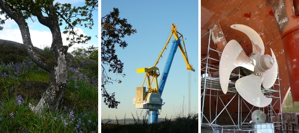

Notices
La cale sèche d'Esquimalt, en partenariat avec l'industrie de réparation de navires, veut être le meilleur chantier naval de la côte Ouest de l'Amérique du Nord.
La Cale sèche d'Esquimalt et ses usagers sont conscients que l'atteinte de cet objectif passe obligatoirement par la gestion de l'environnement. La mise en œuvrue d'un système de gestion de l'environnement certifié ISO 14001 traduit notre engagement à gérer les répercussions que nos activités ont ou pourraient avoir sur l'environnement.
Pour remplir notre engagement, nous allons :
- Protéger le milieu naturel et prévenir la pollution.
- Respecter ou dépasser la législation et la réglementation fédérales, provinciales et municipales applicable, faire respecter les politiques ministérielles et respecter les normes, les pratiques et les autres exigences de l'industrie concernant les aspect environnementaux connus de nos activités.
- Établir et examiner nos programmes, objectifs et cibles afin de garantir le respect de nos engagements environnementaux.
- Communiquer ouvertement avec nos employés les usagers, les entrepreneurs, les fournisseurs, les riverains et les autres intervenants sur les divers aspects de notre système de gestion de l'environnement et sur la nature de nos activités.
- Sensibiliser nos employés et les usagers de la cale sèche à leurs rôles et à leurs responsabilités concernant la protection de l'environnement.
- Améliorer sans cesse nos systèmes, nos programmes et nos méthodes pour répondre àl'évolution des besoins et des attendtes de l'industrie et de la collectivité.
- Date de modification :